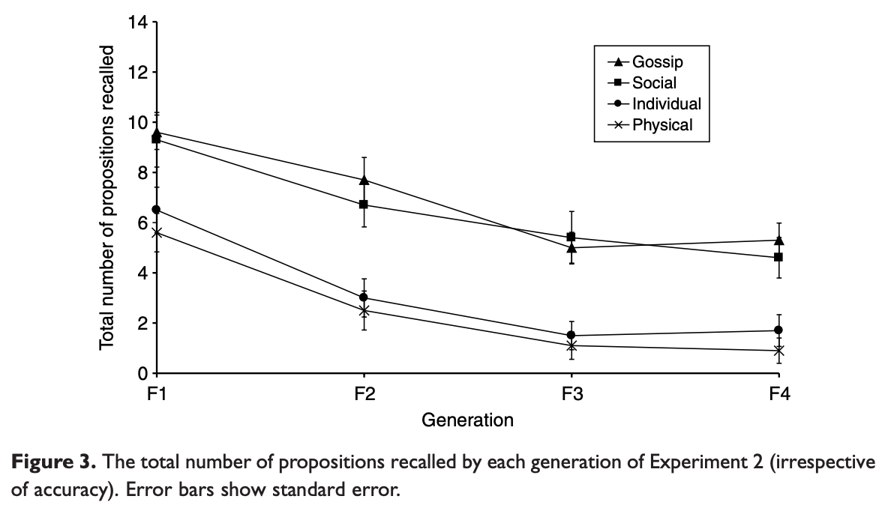
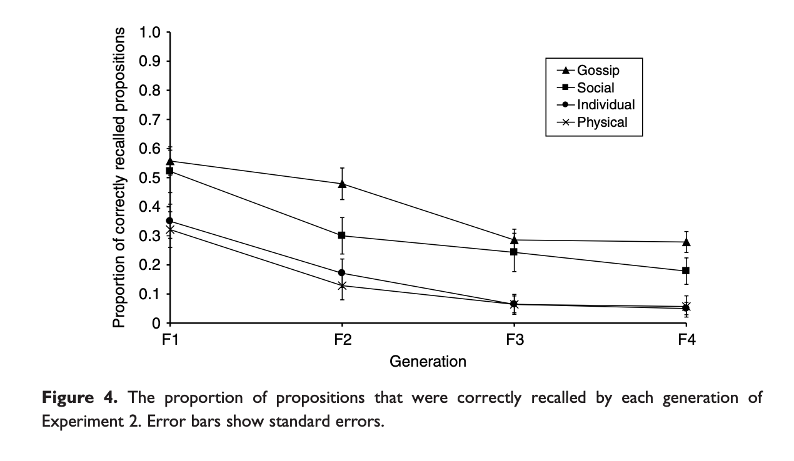
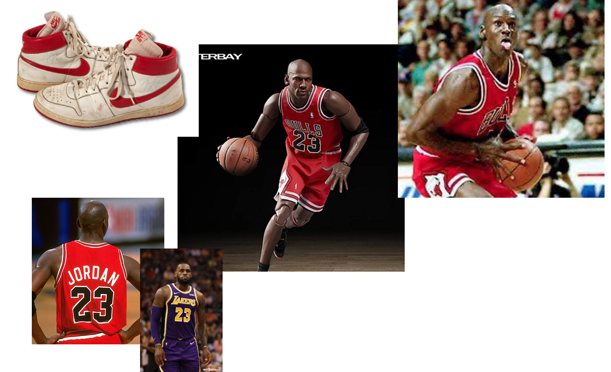
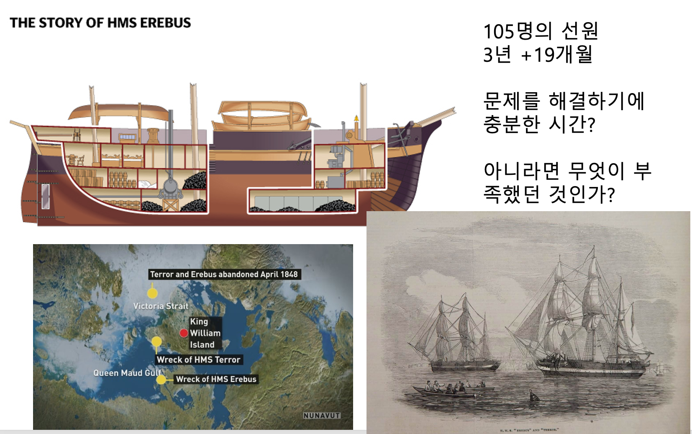
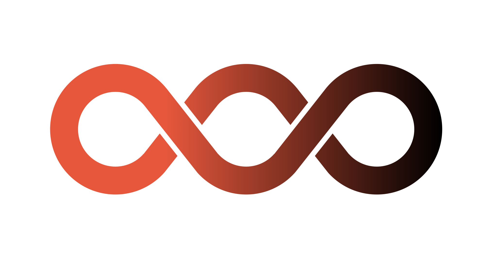
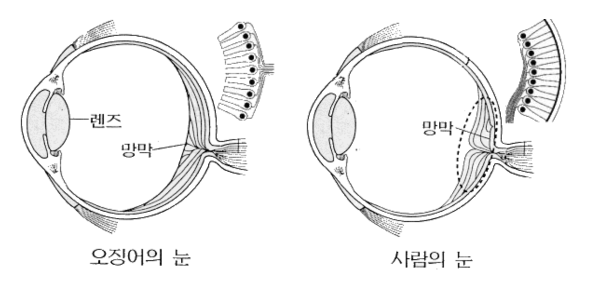
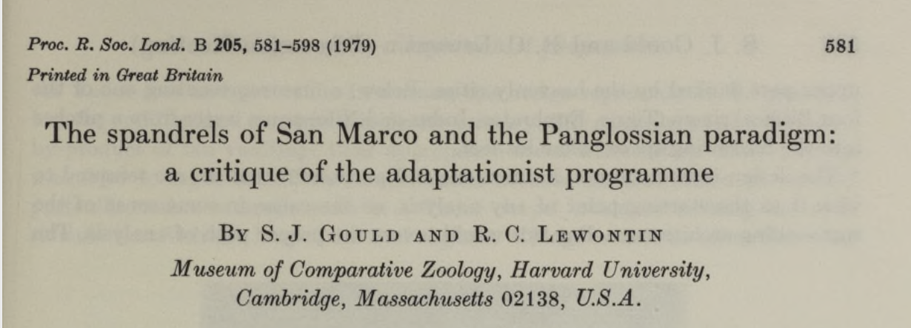
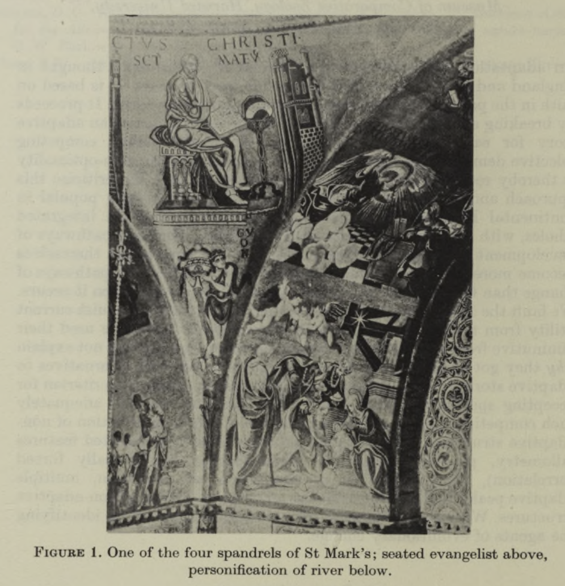

L8. 문화란 무엇이고 어떻게 전파되는가?
인간 행동과 사회현상을 설명하는 또 다른 축
중간시험 설명
중간시험 설명
- 배점 기준
- 객관식 문항
- 정답을 맞추면 5점
- 선택해야 하는데 선택하지 않거나 선택하지 않아야 하는데 선택한 경우 기본 점수 3점에서 개수당 -1점
- 객관식 문항
중간시험 설명
- 배점 기준
- 단답형 문항
- #1
- 정답을 맞추고 설명도 작성하면 5점
- 정답은 맞췄으나 설명을 작성하지 않거나, 정답은 맞추지 못했으나 어떤 과정에 의해 문제를 풀었고 설명을 작성했다면 3점
- 풀긴 했으나 정답도 맞추지 못하고, 설명도 작성하지 않았다면 1점
- #2
- 답변을 작성하였으면 기본 3점.
- 공공재 투자 금액이 평균 절반이 초과할 경우, 최종 보수가 가장 높은 사람에게 +1점
- 공공재 투자 금액이 평균 절반을 초과하지 못할 경우, 가장 투자를 적게한 사람에게 -1점
- #3
- 적절한 동기와 이유를 작성했으면 5점
- 이유를 작성하지 않으면 3점
- #1
- 단답형 문항
중간시험 설명
- 배점 기준
- 서술형 문항
- 세 문항 중 두 문항 이상에 대하여 한단락 이상의 글을 작성하였다면 20점 부여
- 서술형 문항
객관식 문항 1
- 정답률 : 11%
객관식 문항 2
- 정답률 : 26%
객관식 문항 3
- 정답률 : 41%
단답형 문항 1
- 정답률 : 41%
스타트업이 VC의 투자를 받을 확률은 1%이다. VC에 투자를 받은 스타트업 중 50%는 법인 설립 전에 초기 아이디어 검증 과정에서 성공을 거쳤다. 초기 아이디어 검증이 성공할 확률은 10%라고 하자. 초기 아이디어 검증에 성공한 팀이 VC 투자를 받을 확률을 구하고 (%로 작성하시오) 그 결과의 의미에 대해 짧은 해석을 하시오.
단답형 문항 2
이 문항을 풀고 있는 학우들 간 단 한번의 공공재 게임을 하려고 한다. 각자 10000원씩을 나눠주고 공공재에 투자할 금액을 정하게 되는데 공공재에 투자한 돈은 2배가 되어 1/n로 나눠지게 된다. 공공재에서 다시 나눠주는 금액과 공공재에 기여하지 않고 가지고 있던 금액의 합계가 최종적으로 가장 많은 사람이 승자가 되어 이 문항의 점수(+1)를 얻게 된다. 하지만 공공재에 투자된 금액이 13만 5천원을 넘지 않을시(각자가 5000원씩을 기여하는 상황)에는 모두가 점수를 얻지 못하며 대신 가장 적게 기여한 사람은 이 문항에서 -1점을 얻게 된다. 기여결과는 공개하지 않는다. 이때 각자가 공공재에 기여할 금액을 작성하고 그렇게 결정한 이유를 짧게 작성하시오.(예시, 6000원, 이유 : ~~~~) 점수를 획득하는 것은 집단을 배신하는 행위가 아니며 각자가 점수를 얻기 위해 혹은 잃지 않기 위해 최선을 다하여 답변하시기 바랍니다.
단답형 문항 3
아이돌 스타를 좋아하고 따르며 소비를 하는 행위들을 포함하여, 최근 트롯가수들이 나오는 경연 프로그램이 유행하는 것을 보았을때 이러한 팬 활동은 남녀노소를 불문하고 보편적으로 나타나고 있다. 이러한 ’팬 활동’의 이면에 있는 가장 강한 동기는 무엇이라고 생각하는가? 그리고 그 이유에 대해서 짧게 논하시오.(근본 동기이론에서만 답을 찾지 않아도 됨)
서술형 문항 1
’창업 아이디어 생성 및 발전 과정에 대한 진화론적 설명이 단순히 비유가 아닌 실재하는 과정이다.’라는 명제에 대해 동의하지 않는다면 비판적인 견해나 혹은 동의한다면 한 가지 사례를 들어 의견을 개진하시오.
- 주요 비판
- (인간의 특수함) 창업 아이디어는 인간만의 생각 및 특이한 욕구를 가지고 발전시켜나가는 것, 인적 요인의 영향력(스타벅스 창업자의 고유한 비전을 포함한 복합적인 요소)
- (사회의 복잡성) 창업 활동은 개개인의 특성의 총합으로 이뤄진 사회문화 현상의 하나로 예측이 어려움.
서술형 문항 2
집단의 관점에서 봤을때 초창기 스타트업의 운영 방식과 리더의 역할이 무엇인지에 대한 본인의 생각을 바탕으로 침팬지 사회, 개미 사회에서 발견되는 공통점과 그들 사회에서는 찾아볼 수 없는 인간 집단의 특성은 무엇인지 논하시오.
서술형 문항 3
각자가 속한 팀 내에서 무임승차자가 발생했을때 그러한 상황이 일어났음을 어떤 기준에 의해 판단할 것이고 그러한 판단을 어떻게 공유할 것이며, 어떤식으로 문제를 해결할 것인지 논하시오.
수업 목표
- 문화를 과학적으로 이해하려는 시도들과 문화의 독특한 전파 방식 및 편향들에 대해 학습하고 이러한 문화적 전달의 힘에 대해 이해한다.
- 적응과 부산물 논의를 문화의 영역으로 확장해보고 문화의 관점에서 적응과 궁극인에 대해 이해해본다.
문화의 정의와 전달 방식
문화란 무엇인가?
- 먼저 생명이란 무엇인가?
- 살아있는 것들? 살아있음 자체? 살아있는 것처럼 보이는 것?
- 현시적 이미지 속에서는 너무 자명하게 분류할 수 있음.
- 질문 자체가 너무 넓어서 좋은 질문은 아니지만 현시적 이미지 수준에서 생명을 파악해서는 깊이 있는 이해에 다가가기 어렵다. 과학적 상의 개념과 매칭시키려고 노력해야 함.
- 유전자, 유전물질, 유전자 발현을 통한 발달(development) 등의 과학적 상이 반드시 필요함.
그렇다면 문화란 무엇인가?
- 각자가 생각하는 문화
중간시험 서술형 문항 1
’창업 아이디어 생성 및 발전 과정에 대한 진화론적 설명이 단순히 비유가 아닌 실재하는 과정이다.’라는 명제에 대해 동의하지 않는다면 비판적인 견해나 혹은 동의한다면 한 가지 사례를 들어 의견을 개진하시오.
- 주요 비판
- (인간의 특수함) 창업 아이디어는 인간만의 생각 및 특이한 욕구를 가지고 발전시켜나가는 것, 인적 요인의 영향력(스타벅스 창업자의 고유한 비전을 포함한 복합적인 요소)
- (사회의 복잡성) 창업 활동은 개개인의 특성의 총합으로 이뤄진 사회문화 현상의 하나로 예측이 어려움.
설계자가 개입할 수 있는 여지
여러분이 가정을 바꿀 수 있나요? 아니면 학교를 바꿀 수 있나요? 어려워요. 하지만 기업은 여러분들이 원하는대로 만들 수 있고 바꿀 수 있어요. - 천양현 회장님 강연 중
관점 뒤집기

- 유전자의 관점에서 문화의 관점으로
관점 뒤집기의 어려움
- 1970년대 에드워드 윌슨이 사회생물학이라는 학문 분야를 통해 포문을 연 이후로 사회문화적인 현상에 대해서 생물학적 설명을 제시하려는 시도가 활발해짐.
- 사회생물학의 이론적 빈약함과 부족한 경험적 근거를 보완하는 진화심리학이 80년대 나타나면서 생물학의 영향을 인간사회와 문화로 확장하려는 시도는 계속됨.
- 진화심리학자 투비와 코스미디스는 인간 행동에 대한 올바른 과학적(생물학적) 분석을 막는 장애물이 주류 사회학, 인류학, 심리학의 정통 입장으로 오래 군림해왔던 ’표준사회과학모형(Standard Social Science Model, SSSM)’이라고 지적
표준사회과학모형
- 사회문화적 환경은 개인에 외재하면서 인간 행동을 결정하고, 생물학적 요인은 인간 행동과 관계가 없으며, 인간 정신은 ‘빈 서판’과 같다는 것이다.
사회적 사실을 결정하는 원인은 그것에 선행하는 사회적 사실들 중에서 찾아야지 개인의 의식 상태에서 찾아서는 안된다. - 뒤르켐
관점 빼앗기가 아니라 관점 뒤집기
생물학적 요인과 환경적 요인, 즉 자연적인 것과 사회적인 것을 이분법적으로 나누고 어느 한 요인으로만 인간 행동과 사회현상을 설명하려는 입장은 바람직하지 못하다.
인간의 행동과 사회현상은 생물학적 요인과 문화적 요인이 복합적으로 작용하고 있으며 어떤 관점으로 바라보느냐에 따라 두드러져 보이는 요인이 달라질 수는 있으나 본질이 변화하는 것은 아님.
과학적 상을 결합한 문화의 정의
사회적 학습을 통해 전달되며 특정한 편향에 의해 전달 과정이 영향을 받으며 그로 인해 인간의 유기체와 독립적으로 누적적이고 기능적인 것들의 탄생에 영향을 주는 것
사회적 학습이 중요한 개념
인간에게서 사회적 학습과 문화가 있다는 것은 생명이 존재한다는 것만큼 자명(지금도 이뤄지고 있음!)하므로 인간 외의 동물들에게서 사회적 학습 능력과 문화 능력이 나타나는지를 통해 사회적 학습과 문화의 정의에 대해 명확하게 이해할 수 있음.
박새와 우유

일본 원숭이의 고구마 씻기

침팬지의 흰개미 낚시
침팬지의 문화지도

문화적 전달 = 문화를 지탱하는 미시적 과정
- 현재 상태의 거대한 문화 현상도 엄청나게 많은 문화적 정보의 전달과정을 거치면서 변형되고 축적되었음.
- 문화적 정보의 전달에 영향을 주는 요인(편향)들
문화적 정보가 전달되는 과정
- 정보를 전달받을 사람은 정보의 원천을 고를 수 있음(choose to recieve)
- 전달할 정보를 부호화하고 인출(encode and retrieve)
- 정보를 전달할 사람음 정보를 받을 사람을 고를 수 있음(choose to transmit)
참고자료 : Link
편향의 종류
- 편향된 전달
- 내용 편향
- 맥락 편향
- 명성 편향
- 순응 편향(빈도 편향)
편향된 전달
- 리처슨 & 보이드 <유전자만이 아니다>
- 유전자-문화 공진화이론
내용 편향
개인은 콘텐츠를 기반으로 일부 문화적 변형을 배우거나 기억할 가능성이 더 크다. 콘텐츠 기반 편향은 대안적 변이와 관련된 비용 및 이점의 계산 또는 인지 구조가 일부 변이를 더 쉽게 배우거나 기억할 수 있도록 하기 때문에 발생할 수 있다.
- 전달되는 문화 콘텐츠가 얼마나 매력적인가?
- 기억하기 쉬운가?
- 전달하고 싶게 만드는가?
내용 편향 검증
내용 편향 검증


참고자료 : Link
명성 편향
- 문화적 정보가 전달될 때, 콘텐츠의 내용 외에도 콘텐츠가 전달되는 사회적 맥락이 더 중요하게 작용할 수도 있음.
특성을 나타내는 개인의 관찰 가능한 특성을 기반으로 한 특성의 선택. 그럴듯한 모델 기반 편향에는 성공하거나 권위 있는 개인을 모방하는 성향과 자신과 유사한 개인을 모방하는 성향이 포함된다.
명성 편향
무엇이 마이클 조던의 성공에 영향을 미쳤을까?
- 여러 요소들이 있을 수 있음
- 분석하는것은 어려움.
- 따라하는 것은 쉬움.
- 조던의 모든 부분을 따라하게 됨
명성과 권력은 다르다.
- 명성은 자발적으로 존중을 이끌어내고 따라하고 싶게 만듦으로써 명망가의 아이들은 사망률이 낮고 더 젊어서 결혼할 확률이 높다.
- 권력가는 그렇지 않다.
- 좋은 이미지를 가진 사람을 광고로 쓰는 이유
베르테르 효과
- 유전자에 (극단적으로) 부정적인 방향으로 작용하는 명성편향
- 유명인의 자살을 따라하게 되는 현상
- 유명인의 자살에 대한 언론 보도 준칙
순응 편향
선택의 근거로 문화적 변이의 보편성 또는 희소성을 사용하는 것. 예를 들어, 가장 유리한 변형이 가장 일반적일 가능성이 높다. 그렇다면 적합성 편향은 올바른 변형을 쉽게 얻을 수 있는 방법이다
- 자기 자신의 판단에 의하기보다는 주위에 있는 사람들과 같은 행동을 하는 경향
순응 편향 사례

순응 편향 사례
외국의 한 도시 붐비는 거리에서 식당 열곳 중 한곳을 선택하려고 한다.
한 곳에는 손님이 40명, 여섯곳에는 10명씩, 세곳에는 아무도 없음.
어디를 선택할 것인가?
온라인 환경에서 각종 리뷰에 목숨을 거는 이유는 그만큼 순응편향이 강하다는 것을 보여주는 사례
문화적 전달의 힘
HMS Erebus and Terror(1845)
문화적 전달의 힘
Sir John Ross의 탐사
- 에레버스와 테러호보다 15년 먼저 킹윌리엄섬에서 살아남은 탐사대
- 22명으로 훨씬 적은 수
- 현지인인 이누이트족과 친구가 되어 거래관계를 맺었음.
- 방한법, 사냥법, 이동법 등을 배움
- 4년 동안 생존한 뒤 22명 중 19명을 데리고 영국으로 돌아감.
두 사례의 차이점, “바보야, 문제는 문화야”
- 15년 앞선 탐사대가 유전적으로 더 우월하다는 설명은 합리적이지 않음
- 현대의 인간이 살아가는데에는 주요 기관(organ)들 외에도 문화적 요소가 반드시 필요하다.
- 기술의 편리함에 ’의존’하게 되는 문화적 인간
인간의 문화적 학습을 위한 유기체적 특성
- 몸 밖에서 소화시키기 : 조리, 화식
- 신체적 힘을 도구로 대체함으로써 힘 대신 도구를 만드는 정교함이 나타남.
- 빠른 속도를 포기하고 인내하는 달리기 능력을 갖추게 됨
- 배선의 속도를 포기하고 유연한 뇌 연결이 가능한 구조를 택함.
카카오 사태

국가간 마찰에 의해서도 발생
- 일본과의 갈등으로 인해 발생한 무역분쟁
- 산업의 기간이 되는 소재, 부품, 장비 분야에 대한 백색국가 지정 해제
- 소재, 부품, 장비에 대한 국산화 노력하려는 국가적 움직임
요약) 문화적 현상을 이끄는 설계
- 문화적 현상을 이끄는 지능적 활동은 skyhook이 아니다.
- 탐색과정과 문화적 전달을 통해 축적되어 작은 크레인들이 탄생하고 그러한 크레인들이 연쇄 증축과정을 통해 너무 높이 올라와 있다보니 skyhook처럼 보이는 것.
- 환경이 우리를 위협하는 속도보다 환경을 극복해나가는 문화적 속도를 높게 가져가지 못하면 에레버스와 테러 호의 운명을 걸을 수도 있음.

적응/부산물 논의와 문화의 관점
적응/부산물 논의의 필요성
- 인간 행동과 사회현상에 대한 설명에 있어 ‘관점 빼앗기’(자연이냐 문화냐라는 이분법)에서 ’관점 뒤집기’로 관점을 뒤집기 위해서는 세상의 기능, 디자인, 설계의 궁극적 원인에 대해 이해해야만 함.
- 유기체에서 논의가 이뤄진 적응/부산물 개념을 문화의 영역으로 확장하여 인간 행동을 포괄적으로 이해하고자 함.
적응이란 무엇인가?
테오도시우스 도브잔스키는 적응을 다음과 같이 정의하였다.
- 적응은 생물이 서식지에서 보다 잘 살 수 있도록 하는 진화의 과정이다.
- 적응도는 생물이 주어진 서식지에 얼마나 적합하게 진화되었는지를 나타내는 것으로 생물의 생존 정도와 재생산 정도로 나타낼 수 있다.
- 적응형질은 생물이 생존하고 재생산하는데 유리한 방향으로 진행된 유전형질의 발현 특징이다.
적응이란 무엇인가?
적응은 자연 선택에 의한 진화의 1차적 산물 (Alcock, 2009; Dawkins 1982; Dennett, 1995; Gould, 1997; Triverse, 1985; Williams, 1992)
- 자연선택에 의한 산물은 적응만 있는 것은 아니다.
- 적응, 부산물, 임의 효과, 굴절적응
적응 : 진화적 적응환경
- 눈의 진화 : 수억년에 걸친 가시광선 환경
- 이족 보행의 진화 : 440만년 전의 진화적 환경
부산물
- 적응문제를 해결하지도 못하고, 기능적 설계도 갖지 않은 특성
- 기능적 설계를 가진 특성과 함께 ’전달’되는데 우연히 그러한 적응과 짝을 이루었기 때문이다.
- 전구에서 발생하는 열이 빛을 얻기 위한 설계의 부산물인 것과 마찬가지
- ex) 사람의 배꼽 : 생존이나 생식에 도움이 된다는 증거 X,
- 성장하는 태아에게 영양분을 공급한 탯줄의 부산물
임의 효과, 잡음(noise)
- 돌연변이, 돌발적이고 전례가 없는 환경 변화, 발달 동안에 일어나는 사고 같은 힘 때문에 생겨날 수 있다.
- 기계에 모래를 뿌리거나, 컴퓨터 하드드라이브에 뜨거운 커피를 쏟으면 그 기능의 작동을 망치는 것처럼 임의효과는 가끔 생물의 기능이 순조롭게 돌아가는 걸 방해한다.
- 임의 효과 중에는 중립적인 것(적응 기능 작동에 도움도 되지 않고 그렇다고 방해도 되지 않는)도 있고 생물에게 도움이 되는 것도 있다.
- ex) 전구의 유리 용기는 재료와 제조 과정의 결함 때문에 반반하지도 않고 울퉁불퉁한 곳이 있더라도 전구는 제 기능을 발휘할 수 있다.
세가지 진화산물의 상대적 크기
- 진화과학자들의 의견이 다른 부분
- 어떤 사람들은 언어처럼 순전히 사람의 속성인 것조차 큰 뇌의 우연한 부산물에 불과하다고 생각(Gould, 1991)
- 어떤 사람들은 사람의 언어가 적응이라는 것을 보여주는 증거가 아주 많다고 주장한다(Pinker, 1994).
적응에 대한 비판
The chance that higher life forms might have emerged in this way is comparable to the chance that a tornado sweeping through a junkyard might assemble a Boeing 747 from the materials therein
진화를 통해 우연히 생물이 등장할 확률은 고물 야적장에 토네이도가 불어서 흩날린 부품들이 조립되어 보잉 747 항공기가 등장할 확률과 같다.
- Fred Hoyle(1915.6.24 ~ 2001. 8.20, 천체물리학자)
환원불가능한 복잡성 - 마이클 비히


환원불가능한 복잡성
기본적 기능을 하는 많은 구성 요소들이 상호작용하면서 어울려 구성되는 시스템으로, 그 구성 요소들 중 어느 하나라도 제거되면 사실상 그 시스템의 기능이 모두 정지하게 된다.
A single system which is composed of several interacting parts that contribute to the basic function, and where the removal of any one of the parts causes the system to effectively cease functioning.
굴절적응(exaptation)
- 스티븐 제이 굴드
- 하나의 유기체가 특정 용도에 적합한 한 가지 특성을 발전시키고 이후에 그 특성이 전혀 다른 기능으로 이용되는 것을 말하는데 고전적인 사례가 ‘새의 깃털’
- 처음에는 추운 날씨에서 몸을 보호하려고 했던 것이 하늘을 나는 용도로 변했기 때문
어두운 방을 밝히기 위해 성냥을 켰는데, 문을 열자 방안에 통나무 장작이 쌓여있고 벽난로가 있다면 성냥은 전혀 다른 용도를 갖게 된다. 하나의 맥락에서는 어둠을 밝히는 도구가 다른맥락에서는 몸을 따뜻하게 하는 도구가 되는 것이다. 이것이 굴절적응의 본질이다.
자연계에서 많이 나타나는 굴절적응
- 박테리아 편모의 복잡성
- 박테리아의 운동을 담당하는 편모 구조만 해도 엄청나게 복잡함.
- 편모는 일종의 생물학적 모터인데 그것을 구성하는 부분 중 어느 하나만 없어도 모터의 기능을 담당하지 못한다.
- 이러한 사실을 기반으로 지적설계를 주장하는 자들은 ‘환원불가능한 복잡성’ 개념을 만들어서 생물은 점진적으로 진화할 수 없다고 하였음.
- 그러나 편모가 운동성을 가지기 전에는 내부 유전물질을 다른 생물체게 주입하는 주사바늘과 같은 기능을 했음이 밝혀지면서 지적설계론이 반박되었음.
박테리아 편모의 굴절적응

안구의 복잡성

적응은 최선의 산물이 아니다!
- 하임리히법
- 지구상에는 매년 약 10만 명 중 한 명이 목에 걸린 음식물 때문에 질식사함.
- 이러한 현상은 인간의 호흡기관과 소화기관이 목구멍 부위에서 교차하는 구조로 되어 있기 때문에 발생한다.
- 척추동물에게만 나타나는 ’불합리’한 구조
불합리성 in 합리성, 합리성 in 불합리성
- 척추동물의 조상은 어류로부터 갈라져 나왔고,
- 소화기의 일부가 호흡기로 분화되는 과정에서 공유하는 관의 길이가 점차 짧아지면서 교차점만 남게 된 구조
- 특정 시점에서의 최선의 선택
불합리성 in 합리성, 합리성 in 불합리성 #2
- 인간의 눈에 있는 맹점
- 배선의 실수, 시신경과 그와 관련된 혈관들이 다발로 묶인 후 눈의 내부로 들어가 망막의 앞면에 연결되어 있음.
- 초기 구조가 계속해서 전달되는 사례
불합리성 in 합리성, 합리성 in 불합리성 #2
스마트폰에서 ‘불합리’

스마트폰에서 ‘불합리’

스마트폰에서 ‘불합리’

스마트폰에서 ‘불합리’

스마트폰에서 ‘불합리’

스마트폰에서 ‘불합리’

적응주의 vs 반적응주의
스티븐 제이 굴드

- 1941년 9월 10일 ~ 2002년 5월 20일 사망
- 고생물학자
- 반적응주의, 리처드 도킨스와 경쟁관계

스팬드럴과 팡글로시안 패러다임
스팬드럴과 팡글로시안 패러다임

스팬드럴과 팡글로시안 패러다임
- 볼테르 소설 “깡디드”에 나오는 팡글로스 박사에서 유래한 용어
- 교수형에 처해질 위험에 처한 순간조차 “이것은 모든 가능한 세계 중에서 최선의 것이다. 모든 것은 언제나 지금 현재가 최선의 상태”라는 낙천적인 상태를 설파.
- 지나치게 낙천적인 태도를 일컬음
- 많은 진화의 산물을 모두 적응으로 보려는 태도를 비판하기 위한 굴드와 르원틴의 비유
스팬드럴과 팡글로시안 패러다임
- 베네치아에 있는 성 마르코 성당의 스팬드럴과 같이 굴드와 르원틴은 적응이라고 간주되는 대부분의 형질들이 스팬드럴과 같이 부산물일 뿐이라고 적응주의를 비판함.
- “코가 안경을 받치기 위해 만들어졌다고 이야기 하지 말자!”
Spandrels? 사실은 Pendantives

- 굴드, “건축 구조 상의 left-over”
- pendantive = 3D spandrel
Dennett의 반박


- 코벨양식
Dennett의 반박

- squinch 양식
Dennett의 반박

참고자료 : [Link]
Dennett의 반박
- corbel, squinch, pendantive 모두 상부 구조를 받치기 위한 기능이 있는 각기 다른 건축 디자인 양식
- 굴드와 르원틴이 말하는 spandrel(사실 pendantive) 구조는 다른 대안들과의 경쟁에서 미학적 우위를 차지한 적응의 산물이다.(관점 뒤집기!)
- 건축 양식들의 경쟁!
건물의 목적은 무엇인가?
이 시대의 건물은 어떤 목적으로 지어졌을지 생각해봅시다.
다시 스마트폰으로 돌아와서
- 두 메이저 회사들의 ‘불합리한’ 구조를 대하는 접근법 차이
- notch는 각종 카메라와 센서라는 적응 구조 때문에 생기는 ’불합리’이자 부산물
- S사 : 불합리를 없애자! -> infinity display
- A사 : 불합리를 다른 방식으로 ‘적응적으로’ 만들자 -> dynamic island
스타트업에서는?
- 기능구조를 기획하다 보면 마주치게 되는 부산물들을 어떻게 처리할 것인가?
- 스타트업에서는 제한 사항이 더 많기 때문에 이런 적응, 부산물 개념을 더 잘 이해해야됨.
- 오히려 기회가 찾아올 수도 있음.
서비스의 부산물
- 부산물에 대한 정의
- 원래 풀고자 했던 문제는 아니나 본 문제를 해결하는 과정 혹은 결과 발생한 것들
- 부산물이 도움이 되지 않을 수도 있고 도움이 될 수도 있음.
- 배보다 배꼽이 더 클 수 있음.
서비스의 부산물
- 부산물은 해결해야하는 ’문제’일 수도 있지만
- 잘 활용하면 폭발적인 힘을 가지게 될 수도 있음.
문화라는 또 다른 축
유전자(유기체)라는 하나의 축 관점에서 문화라는 또하나의 축의 관점을 도입해보면,
유전자 관점에서는 적응이 아닌 것들도 문화 차원에서는 적응일 수 있고 우리는 이러한 현상을 자주 목격할 수 있다.
- 온갖 중독적인 인공물들
- 스팬드럴(팬던티브), 다이내믹 아일랜드 등
강의 요약
강의 요약
- 문화는 인간만의 고유한 것이고 생물학적인 것으로는 설명할 수 없다는 입장과 생물학적인 것으로 모든 문화현상을 설명할 수 있다는 극단적인 입장보다는 다양한 힘들이 각축하는 포괄적인 현상으로 인간 행동과 사회현상을 바라보는 것이 유익할 것
- 이에 따라 문화를 사회적 전달이라는 보다 과학적인 이미지로서 정의하고 동물과 인간에게서 나타나는 구체적인 전달방식에 대해서 이해했음.
- 또한 문화적 학습이 인간 사회 유지에 엄청난 역할을 하고 있다는 것도 알 수 있었다.
- 그리고 적응을 유기체의 관점을 넘어 문화의 관점으로 확장하면 세계에 대한 이해가 넓어질 수 있다.


인간 본성의 과학적 이해